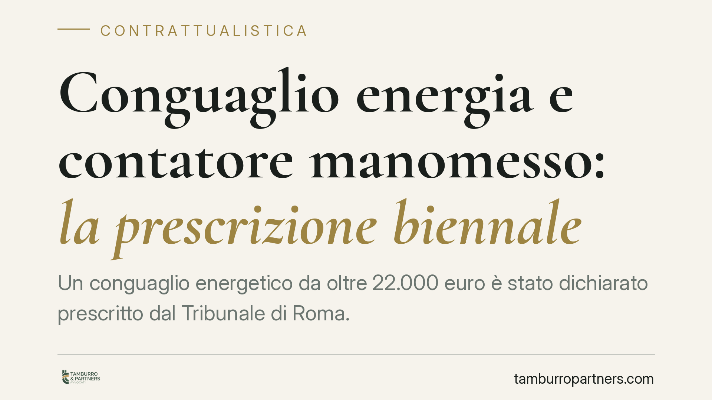

Conguaglio energia e contatore manomesso: la prescrizione biennale
Un conguaglio energetico da oltre 22.000 euro è stato dichiarato prescritto dal Tribunale di Roma. Secondo i giudici, la prescrizione biennale introdotta dalla Legge di Bilancio 2018 per le utenze domestiche e le microimprese si applica anche quando all'utente viene contestata una semplice negligenza nel vigilare su una manomissione del contatore realizzata da altri. Una lettura che pesa sulla gestione dei recuperi tardivi.

Il caso
Una società qualificabile come microimpresa si è vista recapitare un conguaglio superiore a 22.000 euro. La contestazione del fornitore non poggiava su un consumo effettivo non fatturato in senso proprio, ma su una presunta manomissione del contatore. All'utente non veniva attribuita la manomissione in sé, bensì una *culpa in vigilando*: la responsabilità per non aver adeguatamente sorvegliato l'apparecchio.
Il Tribunale di Roma, con pronuncia di merito della Sezione X, ha ritenuto il credito prescritto, applicando il termine breve di due anni. Il punto interessante non è solo il risultato, ma il ragionamento sulla natura del credito azionato.
Inquadramento normativo
La prescrizione breve delle forniture di energia elettrica è stata introdotta dalla Legge n. 205/2017 (Legge di Bilancio 2018), all'articolo 1, tra i commi dedicati alla materia (con previsioni distinte per il settore elettrico, per il gas e per il servizio idrico). La ratio è nota: evitare che l'utente sia esposto a conguagli tardivi e cumulativi, spesso di importo rilevante, riferiti a periodi risalenti.
È opportuna una precisazione sul *dies a quo*, cioè sul momento da cui il termine inizia a decorrere. La norma non lega la decorrenza alla mera ricezione della fattura, ma alla scadenza del termine di pagamento indicato nel documento di fatturazione. È da quel momento che il credito diventa esigibile e che il biennio comincia a maturare.
Sul versante opposto, il fornitore tende a qualificare la manomissione in termini di sottrazione fraudolenta, richiamando le fattispecie penali (artt. 624-625 c.p.) per sostenere l'applicazione della prescrizione ordinaria e più lunga prevista dall'art. 2947 c.c.
Il nodo interpretativo
Qui sta il cuore della decisione. Occorre distinguere tra la qualificazione astratta dell'evento e la natura del credito effettivamente azionato.
Un conto è il fatto illecito della manomissione, che può integrare un reato. Altro conto è ciò che il fornitore chiede in giudizio: se l'azione ha per oggetto il pagamento di corrispettivi da fornitura, il credito resta un credito da somministrazione, soggetto come tale al regime prescrizionale delle utenze.
La contestazione basata sulla *culpa in vigilando* aggrava questa impostazione a sfavore del fornitore. Addebitare all'utente una mera negligenza nella sorveglianza non equivale ad affermare che sia lui l'autore della sottrazione. Ne consegue che non è invocabile il termine più lungo collegato all'illecito penale altrui.
Sul piano probatorio, chi contesta la *culpa in vigilando* deve dimostrarla. E la dimostrazione si scontra con un dato fisico spesso decisivo: il contatore, di norma, si trova fuori dalla disponibilità esclusiva dell'utente, in spazi accessibili anche a terzi o al distributore. Pretendere una sorveglianza continua su un apparecchio non custodito dall'utente rende l'onere della prova particolarmente arduo.
Implicazioni pratiche
Si tratta di una pronuncia di merito. Ha quindi efficacia persuasiva, non vincolante: orienta l'interprete e può essere richiamata in casi analoghi, ma non costituisce precedente obbligatorio per altri giudici.
Per imprese di piccole dimensioni e utenti domestici il messaggio è comunque concreto: un conguaglio elevato, riferito a periodi risalenti oltre il biennio, può essere contestabile anche quando il fornitore lo presenta come conseguenza di una manomissione. La leva difensiva è duplice: la prescrizione e la mancata prova della responsabilità per omessa vigilanza.
Restano invece esclusi dal termine breve i clienti che non rientrano nelle categorie tutelate dalla normativa (ad esempio le imprese di dimensioni maggiori), per i quali va verificata caso per caso la disciplina applicabile.
Cosa fare in concreto
- Verifica le date. Individua la scadenza del pagamento indicata in ciascuna fattura di conguaglio: è da lì che decorre il biennio, non dalla ricezione.
- Conserva ogni documento. Bollette, comunicazioni del distributore, verbali di verifica del contatore e corrispondenza vanno raccolti e ordinati cronologicamente.
- Contesta per iscritto e nei termini. Invia un reclamo formale al fornitore contestando sia la prescrizione sia l'assenza di prova della responsabilità, prima di qualsiasi pagamento.
- Non ammettere responsabilità implicite. Evita comportamenti concludenti, come pagamenti parziali, che potrebbero essere letti come riconoscimento del debito e interrompere la prescrizione.
- Fatti assistere prima di rispondere. Una valutazione tecnica preventiva della natura del credito e dei termini consente di impostare correttamente la difesa.
---
Contributo informativo a cura di Tamburro & Partners – Avv. Giuseppe Tamburro. Non costituisce parere legale.
Ogni contratto ha il suo equilibrio.
Se vuoi una revisione delle clausole o una redazione su misura, scrivi allo studio. Ti rispondiamo entro un giorno lavorativo.